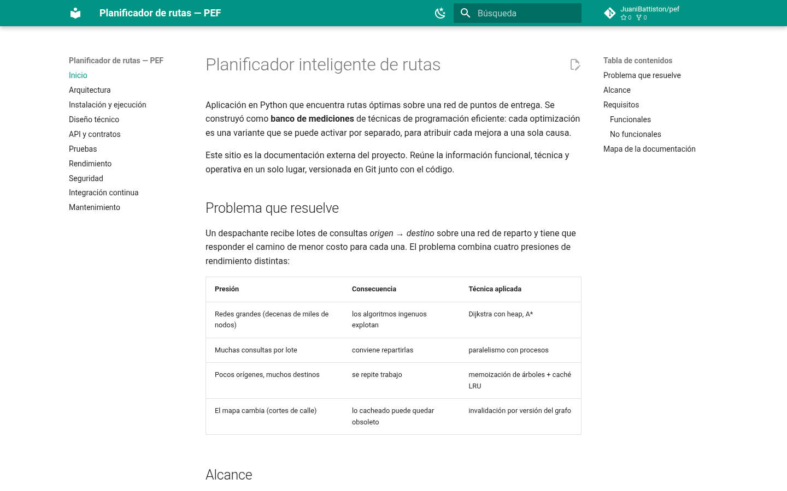
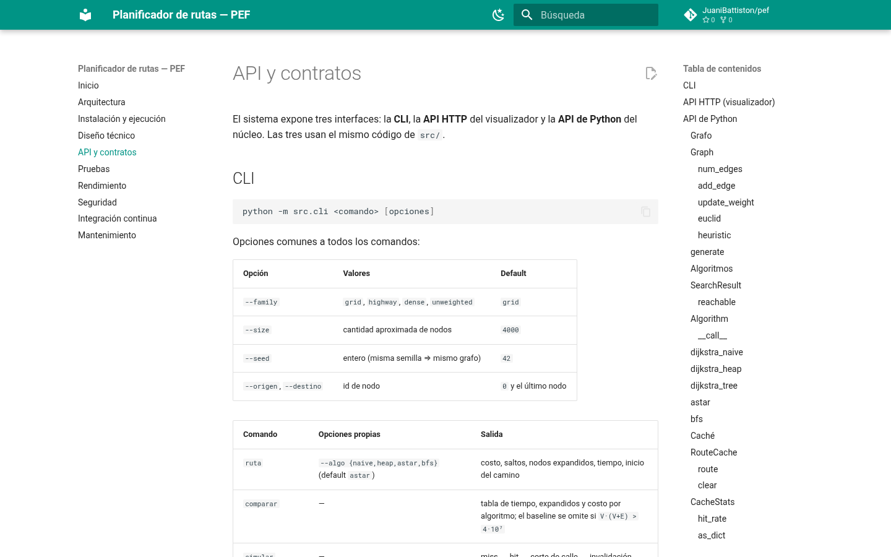
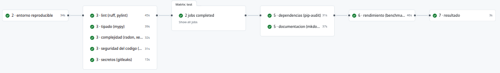
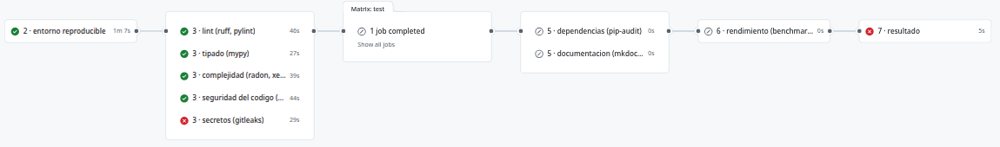

Programación Eficiente · Tercer parcial
Planificador
de rutas.
Parte 3: documentación externa e integración continua. Ningún cambio entra a main si no pasa los controles.
De dónde partimos y qué pide la parte 3
Parte 1: un programa rápido. Parte 2: mantenible, medido y probado. Parte 3: que siga así con cada cambio.
Documentación externa
Funcional, técnica y operativa, en un lugar compartido.
Integración continua
Un pipeline en cada push y PR, con una matriz de 11 controles.
Diseño del pipeline
Etapas, de lo rápido a lo caro, y qué pasa si un control falla.
Toda la consigna, en 10 paradas
MkDocs + GitHub Pages
“Una herramienta externa al código, actualizada, en un lugar compartido, con control de acceso y colaboración.”
Genera un sitio web a partir de archivos Markdown guardados en el repo.
| Pide | Cómo lo cumplimos |
|---|---|
| Compartida | publicada en GitHub Pages |
| Actualizada | se publica sola en cada cambio a main |
| Acceso y colaboración | permisos del repo; se edita por PR |

juanibattiston.github.io/pef
Las 9 secciones pedidas
make setup y los comandos de la CLI.
La sección API se arma sola desde los docstrings (mkdocstrings): si cambia el código, cambia la documentación.
Los mismos controles del CI, en local
“La documentación debe explicar cómo ejecutar localmente los mismos controles que se ejecutan en el CI.”
Cada control es un comando del Makefile. El CI no tiene lógica propia: llama a esos mismos comandos.
# .github/workflows/ci.yml - run: make test # en la compu de cualquiera $ make test
$ make ci lint · types · complexity · sec-code · secrets test · sec-deps · docs · bench · memory · profile ==> make ci: todos los controles aprobados $ make test COV_MIN=95 # umbral a mano
En Mantenimiento: una tabla con cada job del CI, su comando local y cómo arreglarlo si falla.
GitHub Actions
“Que se ejecute ante cada push y cada pull request hacia la rama principal. El código no se integra si incumple los controles.”
on:
push: { branches: [main] }
pull_request: { branches: [main] }
main exige un PR y el check “7 · resultado” en verde, también para administradores.
Dependencias con hashes, Python y runner fijos.

Una corrida en main: 11 jobs, 3 min 27 s, todo aprobado.
Herramienta, comando, reporte y criterio
| Control | Herramienta | Comando | Reporte | Rechaza si… |
|---|---|---|---|---|
| Pruebas | pytest | make test | junit.xml | falla una prueba |
| Cobertura | pytest-cov | make test | coverage.xml + HTML | < 90 % de src/ |
| Análisis estático | Ruff, Pylint | make lint | ruff.sarif | error de Ruff · Pylint < 9,5 |
| Complejidad | Radon, Xenon | make complexity | radon_cc.txt | función peor que rango C (CC > 20) |
| Tipado | mypy | make types | mypy.txt | cualquier error · funciones sin tipar |
| Vulnerabilidades | Bandit, CodeQL | make sec-code | bandit.sarif | severidad alta |
| Secretos | gitleaks | make secrets | gitleaks.sarif | cualquier secreto |
| Dependencias | pip-audit, Dependabot | make sec-deps | pip-audit.json | vulnerabilidad conocida |
| Documentación | MkDocs, markdownlint, Lychee | make docs | sitio + lychee.md | warning · estilo · enlace roto |
| Benchmark | pytest-benchmark | make bench | bench.json | mediana +25 % vs main |
| Profiling CPU | pyinstrument, cProfile | make profile | profile.html | informativo |
| Memoria | tracemalloc | make memory | memory.json | pico > límite (medido +30 %) |
Todos los umbrales están en un solo lugar: el principio del Makefile.
pytest + pytest-cov
pruebas, en Python 3.12 y 3.14
de cobertura · mínimo 90 %
Cada algoritmo contra un oráculo lento pero seguro (Bellman-Ford).
FAILED test_mapa_real_cordoba assert 2011.89 == 1810.70 10 failed, 66 passed
TOTAL 623 138 78% FAIL Required test coverage of 90% not reached. Total coverage: 77.85%
Errores que se ven sin correr el código
Errores, estilo y mantenibilidad.
F401 `os` imported but unused --> src/timing.py:5:8 Found 1 error.
Complejidad ciclomática. Límite: rango C.
ERROR:xenon:block "src/timing.py:16 clasificar" has a rank of D
Tipos y contratos. Toda función de src/ anotada.
src/timing.py:13: error:
Incompatible return value type
(got "tuple[T, float]",
expected "tuple[T, int]")¿Por qué rango C y no A? dijkstra_naive (CC 13) es la línea base a propósito: el límite frena funciones nuevas sin obligar a “arreglar” la referencia.
Código, dependencias y secretos
Bandit (patrones) + CodeQL (flujo de datos)
B602 subprocess call with shell=True Severity: High Confidence: High
pip-audit + Dependabot (PRs semanales)
Found 14 known vulnerabilities in 1 package urllib3 2.4.0 PYSEC-2026-1997 → 2.5.0
gitleaks + secret scanning de GitHub
RuleID: generic-api-key
File: demo_credenciales.env
leaks found: 1Legible (.txt, .md) y SARIF: todo aparece junto en Security → Code scanning.
Bandit mira nuestro código; pip-audit, el de terceros.
Qué bloquea y qué se revisa
| Fuente | Bloquea | Se revisa | Se reporta |
|---|---|---|---|
| Bandit | alta | media | baja |
| pip-audit | toda vulnerab. | — | — |
| gitleaks | todo | — | — |
| CodeQL | — | error, warning | note |
Verificable: los umbrales son variables del Makefile y el job falla si se superan.
# Datos de prueba reproducibles, sin uso criptográfico. rng = random.Random(seed) # nosec B311
| ID | Dónde | Por qué no es un riesgo |
|---|---|---|
| B311 ×5 | generadores de grafos | azar reproducible a propósito |
| B310 | fetch_cordoba.py | URL fija https, no viene del usuario |
Cada excepción: marca en el código + motivo + registro en docs/seguridad.
Lock con hashes + Dependabot
Se edita requirements.in; make lock genera el lock con versión exacta y hash.
# requirements.txt (generado) fastapi==0.162.0 \ --hash=sha256:3785963de305…
Si un paquete cambia en PyPI, el hash no coincide y la instalación falla.
Dependabot abre un PR por semana, que pasa por el mismo pipeline.
# .github/dependabot.yml - package-ecosystem: pip schedule: { interval: weekly } cooldown: { default-days: 7 }
Las actions de GitHub también van fijadas por SHA y las actualiza Dependabot.
Que el sitio se genere y los enlaces anden
| Herramienta | Revisa |
|---|---|
| MkDocs --strict | el sitio se construye; cualquier warning es error |
| markdownlint-cli2 | estilo del Markdown |
| Lychee | enlaces internos y externos |
✅ Successful 44
🚫 Errors 0WARNING - Doc file 'index.md' contains a link 'arquitectura-vieja.md', but the target is not found among documentation files. Aborted with 1 warnings in strict mode!
Comparar contra una línea base confiable
maingit worktreeregresión detectada → rechazado
Los runners de GitHub varían. Medir los dos en la misma máquina deja el ruido en menos de 2 %.
7 operaciones: heap, A*, BFS, baseline, árbol de la caché, acierto de caché, lote.
pyinstrument + cProfile
Perfila 100 consultas A* sobre 16.000 nodos en cada corrida y publica el reporte.
informativo La instrumentación distorsiona el tiempo: sirve para ubicar el cuello de botella, no como umbral. Para eso está el benchmark.
El costo está donde tiene que estar: el bucle de A* y su heurística.
tracemalloc con límites medidos
Cuenta lo que asigna Python, sin ruido del sistema: dos corridas dan el mismo número. Eso permite un límite fijo.
cache_32 17.45 16.54 106% EXCEDE RECHAZADO: se supero el limite de memoria
Primero lo rápido, al final lo caro
Si falla el estático (30 s), no se gastan los 45 s de rendimiento.
Lo que no depende entre sí corre a la vez.
Cada job sube sus reportes, aunque falle.
Se corta el pipeline y no se integra

PR #8: falla secretos en la etapa 3 → las etapas 4 a 6 no corren → “7 · resultado” en rojo.
GitHub marca BLOCKED: la regla de main exige “7 · resultado” en verde.
$ git push origin main GH006: Protected branch update failed - Changes must be made through a pull request. ! [remote rejected] main -> main
Un PR para romper cada control: 11 de 11 rechazados
| Control | Condición de rechazo (consigna) | Cómo lo rompimos | Qué dijo el CI |
|---|---|---|---|
| Pruebas | una o más pruebas fallan | #2 bug en Dijkstra | 10 failed |
| Análisis estático | errores bloqueantes | #4 import sin usar | F401 |
| Cobertura | debajo del umbral | #3 sin tests de la CLI | 77,85 % < 90 % |
| Complejidad | supera el límite | #6 función de 22 ramas | rango D |
| Tipado | errores bloqueantes | #5 int vs float | return-value |
| Seguridad | supera el umbral de rechazo | #7 shell=True · #8 API key · #9 urllib3 | B602 · 1 leak · 14 vulnerab. |
| Documentación | no se genera o falla una validación | #10 enlace roto | strict: abort |
| Benchmark | regresión vs línea base confiable | #11 trabajo extra en el bucle | +168 % |
| Memoria | supera un límite medido | #12 copia de más en la caché | 106 % |
Cada PR rompe un solo control y falla solo ese job. Evidencia y logs: resultados-parte-3/.
Dos fallos reales que frenó el pipeline
Lychee mal instalado
El binario venía dentro de una carpeta del .tar.gz. El job de documentación falló y el PR de la documentación quedó bloqueado hasta arreglarlo.
En local no aparecía: make docs usaba el contenedor.
gitleaks miraba todas las ramas
La clave falsa del PR #8 hizo fallar los 11 PRs. Ahora escanea solo el historial del commit que se integra.
Un falso positivo de configuración: se corrigió, se documentó y se volvieron a correr los PRs.
Gracias por su
atención.
juanibattiston.github.io/pef · github.com/JuaniBattiston/pef